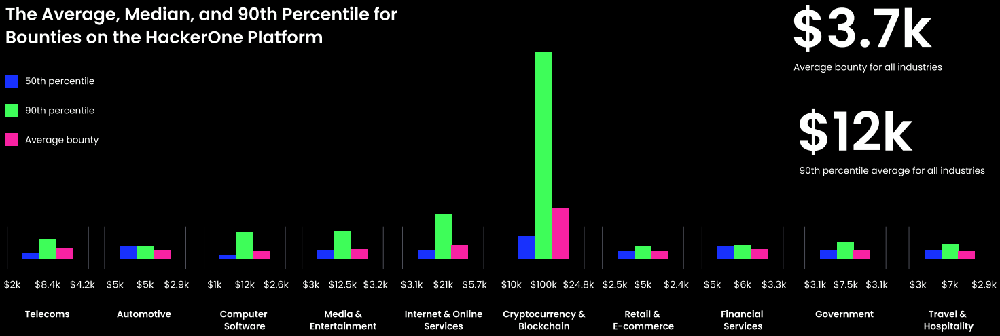
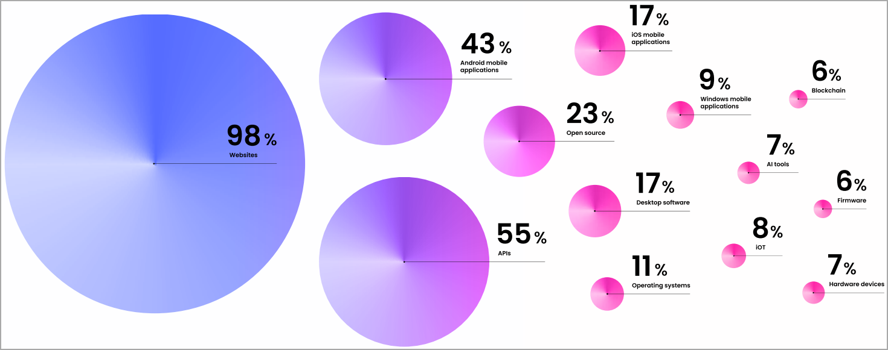

HackerOne pagou a hackers éticos mais de US$ 300 milhões em recompensas por bugs
HackerOne anunciou que seus programas de recompensa por bugs concederam mais de US$ 300 milhões em recompensas a hackers éticos e pesquisadores de vulnerabilidades desde o início da plataforma.
Trinta hackers ganharam mais de US$ 1 milhão por seus envios, e um quebrou o recorde, recebendo mais de US$ 4 milhões por seus relatórios de bugs.
Fundada há mais de uma década,
a HackerOne é uma plataforma de recompensas por bugs que conecta
organizações a uma comunidade de hackers éticos que identificam e
relatam vulnerabilidades e pontos fracos em software em troca de uma recompensa.
Essencialmente, é uma plataforma de hospedagem e coordenação de divulgação de recompensas de bugs que permite às empresas gerenciar relatórios e resolver problemas identificados prontamente, garantindo pagamentos aos repórteres.
Este ano, as organizações demoraram em média 25,5 dias para finalizar a correção dos bugs relatados, uma melhoria de 28% em relação ao ano passado.
Quanto custa um bug?
A HackerOne lançou seu 'Relatório de Segurança Hacker-Power 2023', compartilhando insights sobre as tendências deste ano.
A empresa destacou que as entidades criptográficas e blockchain continuam a receber a maior atenção dos hackers éticos, alimentadas pela promessa dos maiores pagamentos. Este ano, a maior recompensa paga foi de US$ 100.050 por uma empresa de criptografia.
O preço médio de um bug na plataforma é de US$ 500 este ano e chega a US$ 3.000 no percentil 90 (10% mais alto).
Para falhas críticas e de alta gravidade, o pagamento médio é de US$ 3.700 em todos os setores e chega a US$ 12.000 no percentil 90.

HackerOne diz que a caça tradicional a bugs não é a única atividade na plataforma, já que os compromissos de pen-testing aumentaram 54% este ano.
A IA é uma ajuda e um alvo ----titulo
Mais da metade dos hackers éticos que participam dos programas HackerOne relatam usar IA generativa de alguma forma, incluindo escrever relatórios melhores, escrever códigos e reduzir barreiras linguísticas.
61% of them report planning to use generative AI to find more vulnerabilities, and 55% report expecting AI tools themselves to become a significant target in the coming years.
The bounty hunters are split in predicting whether AI will lead to safer software products or an increase in vulnerabilities.

Áreas que hackers éticos concentraram seus esforços este ano (HackerOne)
Outras opiniões registradas no relatório incluem motivação e fatores desencorajadores, com recompensas desempenhando o maior papel (73%) na participação, seguidas por uma abundância de falhas (50%), oportunidade de aprender (45%), escopo variado (46%) e pagamentos rápidos (42%).
A definição de derramamento na conscientização cibernética
Definição de derramamento na conscientização cibernética – A conscientização cibernética deve ser uma grande preocupação para todas as empresas em uma era de violações de dados e vazamento de informações pessoais. Um termo que surgiu recentemente é derramamento.
Derramamento refere-se à liberação não autorizada de dados confidenciais ou sensíveis de um nível de segurança para outro inferior. Pode resultar de erros humanos ou ataques de hackers.
Definição
Derramamento refere-se à divulgação não autorizada de informações, representando uma grande ameaça à segurança cibernética. O derramamento pode ocorrer de forma deliberada ou acidental e resultar em roubo de identidade, fraude e outros crimes. Por esse motivo, é de vital importância compreender o que significa derramamento na consciência cibernética, a fim de tomar medidas preventivas contra a sua ocorrência – este post do blog irá explorar o que constitui derramamento, como ocorre e que medidas podem ser tomadas contra a sua ocorrência.
Derramamento refere-se a qualquer liberação não intencional de informações confidenciais. Pode ocorrer devido a erro humano, vulnerabilidades de software ou ataques cibernéticos deliberados; independentemente da causa, pode ter repercussões devastadoras tanto para os indivíduos como para as empresas.
Existem duas formas principais de vazamento de dados: intencional e não intencional. Os cibercriminosos violam intencionalmente os sistemas para obter acesso a dados sensíveis, enquanto os funcionários sem formação suficiente em segurança cibernética podem expor dados confidenciais sem saber, o que pode revelar-se dispendioso para as organizações em termos de perdas financeiras e danos à confiança de clientes e parceiros.
O treinamento em segurança cibernética é um componente integral da estratégia de segurança de qualquer organização, proporcionando aos funcionários habilidades essenciais, como práticas seguras de manuseio de dados e como reconhecer ataques de phishing. Além disso, a formação em cibersegurança ajuda os funcionários a compreender por que razão devem ser implementadas soluções robustas, como firewalls, sistemas de deteção de intrusões e software antivírus – medidas que podem diminuir significativamente o risco de fuga de dados não intencional.
A segurança física também deve ser priorizada; bloquear laptops e unidades USB em salas seguras impedirá que indivíduos não autorizados acessem informações confidenciais. A autenticação multifator oferece outra camada de defesa contra qualquer tentativa de violação de dados.
Vazamentos acidentais ocorrem quando usuários pegam informações confidenciais de sistemas restritos e as utilizam sem autorização em outro não classificado; ou quando os utilizadores escrevem relatórios armazenados em sistemas classificados e posteriormente os utilizam sem autorização para redigir briefings num ambiente não classificado sem autorização. Tais acidentes podem custar caro às empresas, levando a multas regulatórias, bem como à perda de confiança de clientes e parceiros.
Causas
A segurança cibernética é um dos pilares dos negócios modernos. Infelizmente, as empresas podem muitas vezes ser vítimas de violações de segurança que prejudicam a sua presença online e levam a perdas financeiras. Embora os problemas de segurança cibernética possam parecer graves, muitas vezes podem ser evitados com formação e educação adequadas. Uma causa comum de incidentes cibernéticos é o derramamento – que se refere a qualquer divulgação não autorizada de dados confidenciais devido a erro humano ou por agentes mal-intencionados. Para reduzir o risco de derrame, as organizações devem implementar medidas rigorosas de proteção de dados e educar os seus funcionários sobre a melhor forma de proteger os dados confidenciais.
O derramamento, mais comumente referido como “vazamento de dados” ou “sistema comprometido”, ocorre quando informações confidenciais são acidentalmente liberadas em um ambiente não intencional. Embora as violações de dados muitas vezes resultem de intenções maliciosas, o derramamento resulta mais frequentemente de erro humano e descuido
Os vazamentos de dados podem ocorrer de várias maneiras, desde o compartilhamento acidental de informações confidenciais por e-mail, mídias sociais e fóruns on-line até o vazamento de dados pessoais que leva ao roubo de identidade ou à fraude. Um vazamento de dados pode ter repercussões de longo alcance, incluindo danos à reputação, multas regulatórias e perda de confiança de clientes e parceiros.
Às vezes, os incidentes cibernéticos podem ser perpetrados intencionalmente, como quando funcionários insatisfeitos invadem os sistemas da empresa para vender dados confidenciais na Dark Web. Mas a maioria dos incidentes cibernéticos ocorre inconscientemente, como resultado de práticas inadequadas dos funcionários ou de medidas de segurança cibernética insuficientes.
As empresas podem proteger informações confidenciais empregando métodos de autenticação fortes e software de criptografia, treinando funcionários em procedimentos seguros de manuseio de dados e como reconhecer ataques de phishing e corrigindo software regularmente para identificar vulnerabilidades – essas etapas reduzirão o impacto de possíveis incidentes cibernéticos, protegendo ao mesmo tempo seus dados digitais. reputação e resultados financeiros.
Impactos
O derramamento é um grande risco de segurança cibernética que pode ter repercussões terríveis tanto para organizações como para indivíduos. Ocorre quando informações confidenciais ou confidenciais são transferidas para sistemas de informação não aprovados sem autorização dos usuários, muitas vezes devido a erro humano; O derrame sublinha a necessidade de programas eficazes de formação em sensibilização cibernética, bem como de procedimentos seguros de tratamento de dados para mitigar esta ameaça e manter os dados confidenciais protegidos contra exposição, ao mesmo tempo que se mitigam perdas financeiras e danos à reputação causados ??pela sua exposição.
As fugas de dados podem ocorrer através de vários canais, incluindo e-mail, mensagens instantâneas ou redes sociais. Embora a informação provavelmente nunca tenha sido destinada ao consumo público, os cibercriminosos ainda podem utilizá-la para cometer crimes ou obter acesso não autorizado a dados comerciais confidenciais – levando a perdas financeiras, danos à reputação e repercussões legais, bem como multas regulamentares.
Os profissionais de segurança cibernética podem diminuir a probabilidade de incidentes de derramamento, oferecendo treinamento abrangente de conscientização cibernética aos funcionários, implementando soluções tecnológicas e usando técnicas de criptografia. Além disso, as organizações devem implementar medidas de segurança rigorosas sem impedir a usabilidade; isso garante que os funcionários sigam os protocolos adequados ao lidar com informações confidenciais.
Uma forma de evitar a fuga acidental de informações confidenciais é através de sistemas robustos de controlo de acesso que restrinjam quem pode entrar. As empresas também devem evitar a utilização de redes classificadas para trabalhos não confidenciais, se possível.
As organizações precisam de um plano para mitigar os riscos cibernéticos, incluindo protocolos de comunicação, estratégias de contenção e procedimentos de recuperação em caso de violação. Eles também devem trabalhar com fornecedores que compartilhem compromissos semelhantes de segurança cibernética.
A instalação de firewalls, sistemas de detecção de intrusões e software antivírus é uma forma eficaz de mitigar violações de dados, enquanto os funcionários também devem receber formação sobre práticas seguras de tratamento de dados e como reconhecer ataques de phishing. As tecnologias de criptografia também desempenham um papel essencial na manutenção da segurança das informações; apenas leitores autorizados podem lê-lo, evitando assim o acesso não autorizado.
Prevenção
A segurança cibernética é um dos pilares de qualquer negócio de sucesso, especialmente à medida que as violações de dados continuam a aumentar. Devem ser implementadas medidas de segurança cibernética contra derramamentos para proteger informações confidenciais contra perdas. Um mecanismo de segurança cibernética de derramamento que funciona é conhecido como segurança cibernética de derramamento – esse método impede o fluxo de informações entre os níveis de segurança. Implemente políticas e treine os funcionários sobre como reconhecer ameaças cibernéticas comuns, bem como seguir as regulamentações do setor, garantindo que os funcionários entendam essas regras.
Para evitar o derramamento de informações, as empresas devem implementar controlos de acesso rigorosos e limitar o número de pessoas que podem obter acesso a determinados dados. Eles devem treinar os funcionários sobre como distinguir dados seguros de não seguros, a fim de evitar vazamentos de informações confidenciais e evitar o surgimento de consequências graves. Por último, encontrar um equilíbrio entre segurança e experiência do usuário aumentará a conformidade dos funcionários e tornará mais provável que seus procedimentos sejam seguidos.
Um exemplo de vazamento pode incluir o envio de documentos confidenciais para uma lista de e-mail desprotegida ou o compartilhamento de dados confidenciais on-line sem autorização e o uso indevido de redes classificadas para trabalhos não confidenciais. Embora o derrame raramente resulte em danos a longo prazo, ainda pode minar a confiança entre os membros de uma organização, pelo que é altamente recomendável ter programas adequados de formação em sensibilização cibernética para minimizar esses riscos.
Um programa de treinamento de conscientização cibernética para funcionários pode evitar o derramamento de informações
Uma forma eficaz de prevenir o vazamento de informações provenientes de ameaças cibernéticas é criar um programa de treinamento de conscientização sobre segurança cibernética para os funcionários. Isso lhes ensinará a importância de proteger adequadamente os dados confidenciais e a melhor forma de lidar com eles. Estes programas também irão enfatizar as consequências da não adesão aos protocolos de segurança. Os treinamentos podem ocorrer no local ou on-line e devem ser atualizados regularmente em resposta a ameaças cibernéticas, mantendo-se divertidos e envolventes para manter o envolvimento dos funcionários. A retenção de funcionários aumentará enquanto o conhecimento de segurança melhora significativamente através desses programas, e eles reforçarão a importância de evitar ataques de phishing e outras ameaças cibernéticas, bem como incentivarão os funcionários a atualizar o software com mais frequência e a praticar uma melhor higiene de senhas.